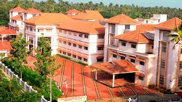

- S.N.M. College Maliankara symbolizes the steady advancement of Moothakunnam, which was an underdeveloped village, towards social and cultural regeneration over the years. Mission of SNM College has been, as enunciated by the great social revolutionary of Kerala, Sree Narayana Guru," Emancipation Through Education".
- We began the task of transforming lives in 1964, with the inauguration of our institution by Sri Sahodaran Ayyappan, an ardent disciple of Sri Narayana Guru.
- Our college now is in a sprawling green that has offered Degree Programmes from 1972 and Postgraduate Programmes from 1983.
- Today there are 13 Degree Programmes, 8 Postgraduate Programmes and one Integrated Programme with a total student strength of 1692.
- From 2011 onwards two Research Centers function for the students who pursue Doctoral Programme in Botany and Chemistry.
- Re-accredited in the III Cycle by the NAAC in 2024 with " A " grade and CGPA of 3.08, we constantly strive against all odds to excel and establish ourselves in the higher education sector.